Pourquoi douze notes et pas treize ? Pourquoi deux instruments jouant la même note ne sonnent-ils pas pareil ? Tout tient dans une suite de nombres — et dans une corde qu'on peut tendre plus ou moins fort.
Les bases : ce qu'est un spectre, ce qui distingue un son pur d'un son complexe, ce qu'on appelle la hauteur — et pourquoi une note porte toujours plusieurs fréquences à la fois.
L'être humain perçoit le monde à l'aide de signaux porteurs d'information, dont certains sont de nature sonore. De l'Antiquité jusqu'à nos jours, il a combiné les sons de manière harmonieuse pour en faire un art : la musique.
Un son est une onde mécanique périodique. Le mathématicien Joseph Fourier (1768-1830) a montré qu'un signal périodique de fréquence f₁ peut être décomposé en une somme de signaux sinusoïdaux : un de fréquence f₁ (la fréquence fondamentale) et d'autres de fréquences fn, multiples de la fondamentale (les fréquences harmoniques).
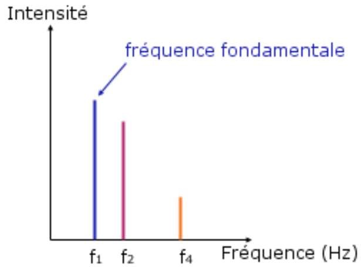
L'analyse spectrale est réalisée par un logiciel spécialisé — Audacity en salle — après un enregistrement.
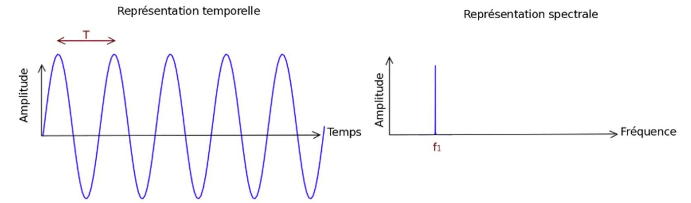
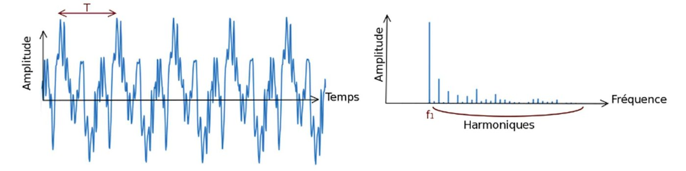
Voici la valeur des fréquences fondamentales (en Hz) de chaque note, pour plusieurs octaves. Repère la ligne du La : chaque colonne double la précédente.
| Note | −1 | 0 | 1 | 2 | 3 | 4 | 5 | 6 |
|---|---|---|---|---|---|---|---|---|
| Do | 16,35 | 32,7 | 65,4 | 130,8 | 262 | 523 | 1 047 | 2 093 |
| Do♯ | 17,3 | 34,6 | 69,3 | 138,6 | 277 | 554 | 1 109 | 2 217 |
| Ré | 18,35 | 36,7 | 73,4 | 146,8 | 294 | 587 | 1 175 | 2 349 |
| Ré♯ / Mi♭ | 19,45 | 38,9 | 77,8 | 155,6 | 311 | 622 | 1 245 | 2 489 |
| Mi | 20,6 | 41,2 | 82,4 | 164,8 | 330 | 659 | 1 319 | 2 637 |
| Fa | 21,8 | 43,7 | 87,3 | 174,6 | 349 | 698 | 1 397 | 2 794 |
| Fa♯ | 23,1 | 46,2 | 92,5 | 185 | 370 | 740 | 1 480 | 2 960 |
| Sol | 24,5 | 49 | 98 | 196,0 | 392 | 784 | 1 568 | 3 136 |
| Sol♯ / La♭ | 26 | 51,9 | 103,8 | 207,7 | 415 | 831 | 1 661 | 3 322 |
| La | 27,5 | 55 | 110,0 | 220 | 440 | 880 | 1 760 | 3 520 |
| La♯ / Si♭ | 29,1 | 58,3 | 116,5 | 233 | 466 | 932 | 1 865 | 3 729 |
| Si | 30,9 | 61,7 | 123,5 | 247 | 494 | 988 | 1 976 | 3 951 |
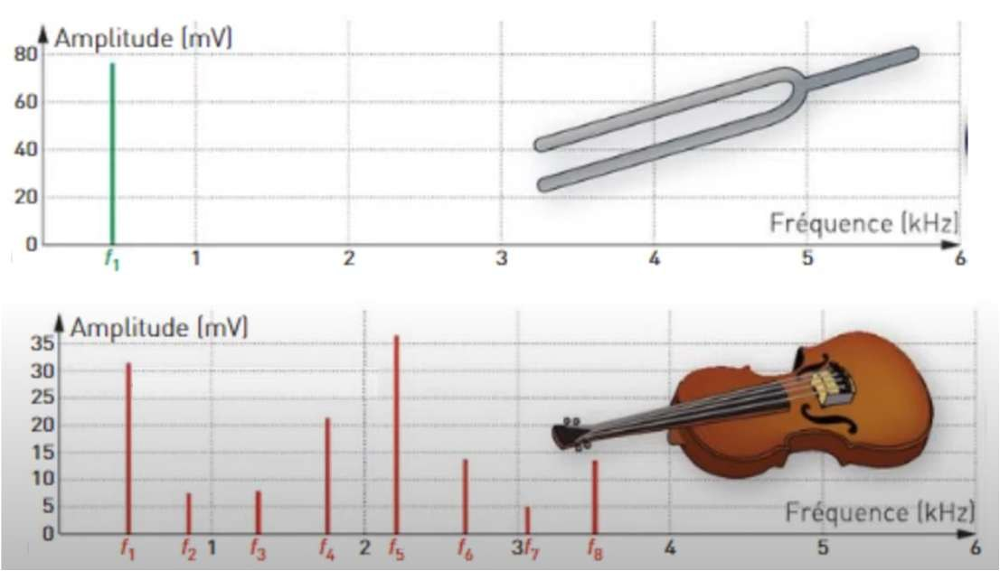
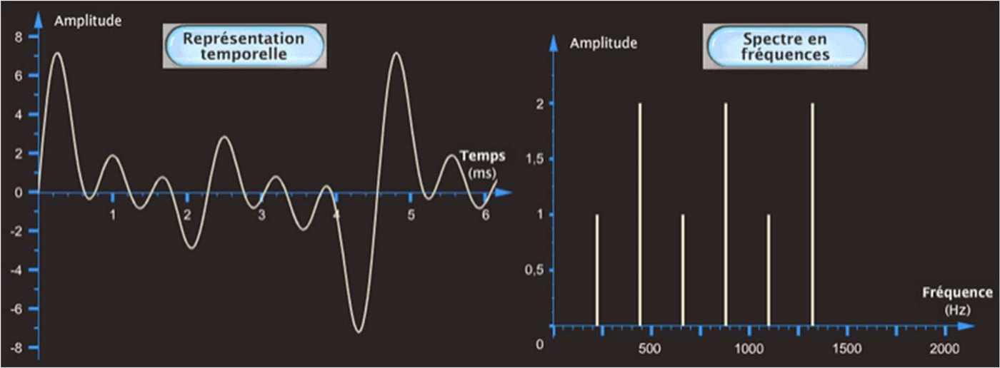
Le son émis par un instrument a été enregistré avec un logiciel d'acquisition. Parmi les trois spectres proposés, retrouve celui qui correspond au son enregistré — et justifie.
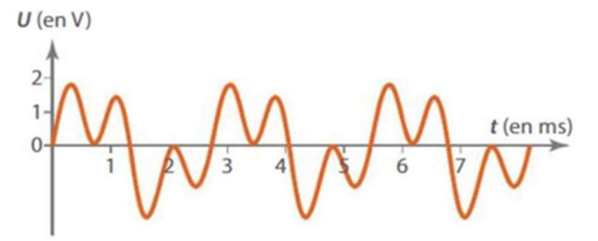
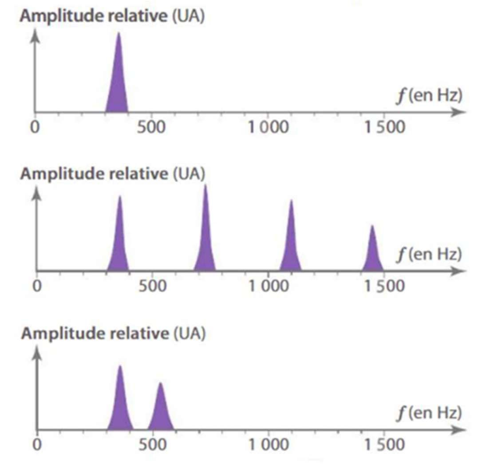
L'arrêté du 30/05/2023 a redécoupé le thème 4 en trois parties : 4.1 Son et musique (ce chapitre, maths de la musique comprises), 4.2 Le son, une information à coder, 4.3 Entendre et protéger son audition. Au 4.1, un seul savoir manque ici : « La puissance par unité de surface transportée par une onde sonore est quantifiée par son intensité. Son niveau d'intensité sonore est exprimé en décibels selon une échelle logarithmique », avec le savoir-faire « Utiliser l'échelle logarithmique de niveau d'intensité sonore pour relier l'intensité sonore au niveau d'intensité sonore ». La propagation et la célérité, elles, ne figurent plus au 4.1 : un rappel de seconde suffit.
Proposé : une étape 1.3 « Intensité et niveau sonore » — I en W·m⁻², la relation L = 10 log(I / I₀) donnée, et l'idée qui fait le sel du thème : doubler l'intensité n'ajoute que 3 dB (l'introduction du programme insiste sur « la non-linéarité de la sensation par rapport à la stimulation »). L'échelle des niveaux du chapitre de seconde T3-C1, refaite et auditée, se reprend telle quelle.
Et le 4.3 ? Aucun chapitre du site ne le traite (oreille, cellules ciliées, « Au-delà de 80 dB, un son peut devenir nocif »). Il est surtout de SVT, mais un savoir-faire est de physique : « Mesurer le niveau d'intensité sonore perçu en fonction de la distance à la source avec ou sans dispositif de protection » — un sonomètre et un casque antibruit suffisent. À répartir avec la collègue de SVT ?
Trois postes : le son analysé à l'ordinateur, la corde vibrante, la colonne d'air. En deux séances de TP, ton groupe passe sur les trois, dans l'ordre que t'indique ton professeur.
Tes réponses partent à ton professeur. Il n'y a pas de correction dans cette page : elle viendra en classe, une fois les notes rendues.
Le barème (5 + 15, réparti 5 · 6 · 4 entre les postes) est celui de la maquette du 13/11, sur le modèle de ta grille du TP9. À valider, comme la question encore ouverte : une note par groupe, reportée sur chacun, ou une note par élève ?
| Geste | Comment faire |
|---|---|
| Enregistrer | Clique sur le rond rouge pour démarrer, sur le carré pour arrêter. |
| Agrandir un signal | Sélectionne une partie de la bande son (clique et glisse), puis clique sur l'icône loupe pour l'ajuster à la largeur de la fenêtre. |
| Tracer le spectre | Onglet Analyse → Tracer le spectre… Puis : Taille = 4 096, Fonction = Fenêtre Welch, Axe = Fréquence linéaire (ou logarithmique si tu vois mal). |
| Lire une fréquence | Place la souris près d'un pic : la valeur s'affiche en bas de la fenêtre, du type Pic : 3515 Hz = −33,5 dB. |
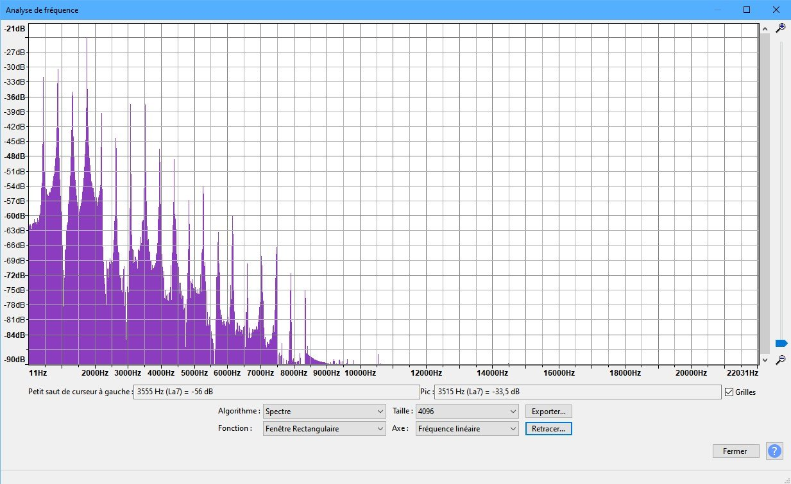
Enregistre le son produit par le diapason. Réalise son spectre en fréquence. Dépose une copie d'écran du signal et du spectre.
Avec le microphone du casque, essaie de reproduire cette note avec ta voix. Réalise le spectre associé et dépose-le avec le signal.
« Identifier deux notes à l'octave à l'aide de leur spectre » est au programme, et ce poste le fournit sans rien ajouter : une voix grave chante souvent le La à 220 Hz, une octave sous le diapason. Proposé : une question 6 — « Ta fondamentale est à 220 Hz : as-tu chanté la même note ? Compare les deux spectres. » Comme elle serait notée, l'octave doit être définie avant le TP (le Document 4 la montre déjà, colonne par colonne) : une phrase en S1 suffit.
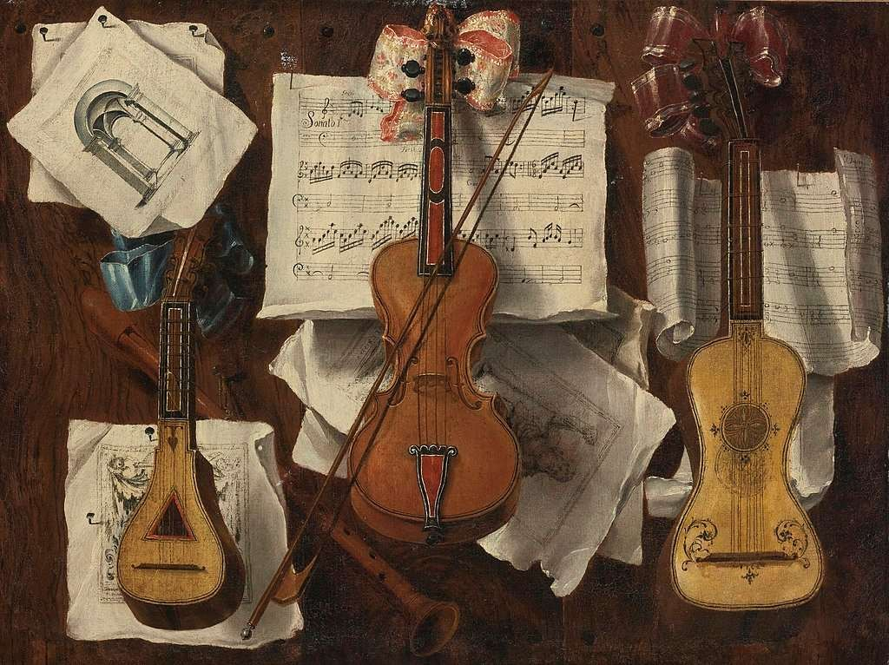
Ton professeur a installé le montage sur sa paillasse. Reproduis-le sur la tienne.
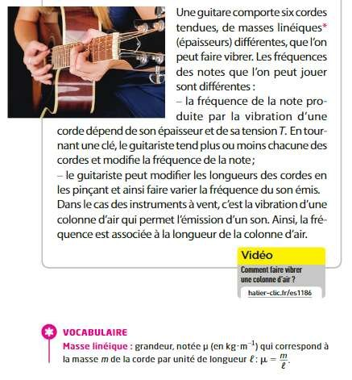
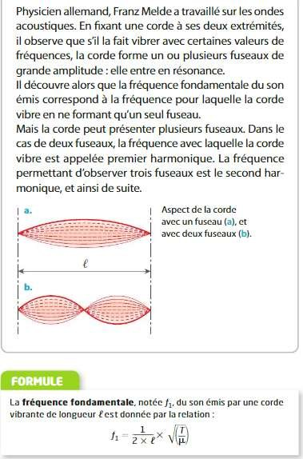
On fait varier la masse suspendue au bout de la corde. La tension est proportionnelle à cette masse : en changeant la masse, c'est la tension qu'on modifie. La fréquence fondamentale est atteinte quand tu observes un beau fuseau unique sur la corde.
C.2 et C.3 — Recommence pour chaque masse. Recopie ce tableau dans Excel, complète-le, puis trace L = f(√m) : un titre au graphique, un titre à chaque axe, une courbe de tendance.
| Masse suspendue m (kg) | 0,002 | 0,005 | 0,01 | 0,02 | 0,05 | 0,1 | 0,2 |
|---|---|---|---|---|---|---|---|
| √m (√kg) | |||||||
| L (m) |
Mesure au centimètre près : ΔL = 1 cm.
Le programme demande de « relier qualitativement la fréquence fondamentale du signal émis aux caractéristiques d'une corde vibrante ». Ton TP va plus loin (L ∝ √T, la formule du Document 6) : c'est un bon niveau de TP, mais la formule n'est pas exigible en évaluation écrite. À dire aux élèves ?
Piste du programme pour un « pour aller plus loin » : « Une controverse scientifique : le problème des cordes vibrantes entre d'Alembert, Euler et Daniel Bernoulli » — trois savants, une même corde, et la naissance de l'idée qu'une vibration est une somme de vibrations simples (l'histoire de Fourier commence là).
Il est possible de refaire l'expérience avec l'animation de l'université de Nantes (un service public, pas de traceur).
▶ Ouvrir l'animation « corde de Melde » (université de Nantes)
Ton professeur a installé le montage sur sa paillasse. Reproduis-le sur la tienne. Le tube mesure 40 cm.
La fréquence de résonance de la colonne d'air est de 440 Hz. Règle le GBF de manière à ne créer qu'un seul fuseau dans la colonne. Déplace le microphone dans le tube et note la position des nœuds. Recommence à 880 Hz, puis à 1 320 Hz.
Le corrigé du dossier relie le microphone à un oscilloscope ; ta paillasse utilise une interface Sysam-SP5 et l'ordinateur. La figure 6 suit la paillasse (⑤ l'interface, ⑥ l'ordinateur). À confirmer, avec le logiciel à nommer (Latis Pro ?).
Après le TP, ce qui le relie : une corde, une colonne d'air, un pont ou un diapason entrent en résonance quand on les excite à la bonne fréquence.
🎬 La vidéo du dossier d'activités sur la résonance (QR code de la page 5).
Ton professeur réalise une expérience avec deux diapasons identiques et une balle de tennis de table pendue à un fil. Observe attentivement.
Le 4.1 suggère, en « Sciences, société et environnement » : les instruments et les musiques du monde, les principes de l'éco-acoustique pour étudier la biodiversité, la production des sons chez les animaux. Et, pour le projet expérimental et numérique : la voix humaine, comparer les sons de différents instruments, enregistrer des ultrasons de la nature, identifier des espèces par leurs spectres sonores.
Proposé : une carte « pour aller plus loin » ici (reconnaître un oiseau à son spectre, avec Audacity, réemploie exactement le poste ①), et un renvoi vers le projet expérimental de 1re pour ceux qui veulent en faire leur sujet.
Pourquoi douze notes ? Parce que douze quintes tombent presque sur sept octaves — et que « presque » a occupé les musiciens pendant deux mille ans.
Depuis 2023, l'exigible tient en trois phrases : « En musique, un intervalle entre deux sons est défini par le rapport de leurs fréquences fondamentales » ; deux sons dans le rapport 2/1 sont la même note, à l'octave ; « Une gamme est une suite finie de notes réparties sur une octave ». Les quintes, le comma, le loup et le tempérament égal passent en piste d'histoire : « les gammes de Pythagore à Bach ».
Cette séance reste juste et belle, mais elle couvre bien plus que l'exigible. Proposé : marquer chaque étape par son statut, l'essentiel d'un côté, l'« histoire des gammes » de l'autre, comme en SNT. Et y placer le second savoir-faire, « Identifier deux notes à l'octave à l'aide de leur spectre », si tu ne le mets pas au poste ①.
La vidéo dure environ 24 minutes et les questions suivent son minutage. Mets-la en pause à chaque bloc.
🎬 « Les mathématiques de la musique », avec Vled Tapas — la vidéo de l'activité introductive.
La correction d'origine écrit « 312 ≈ 29 ». C'est faux d'un facteur mille : 312 = 531 441 et 29 = 512. L'égalité correcte, qui découle de (3/2)12 ≈ 27, est 312 ≈ 219 (531 441 contre 524 288, à 1,4 % près) — et c'est bien cet écart de 1,4 % qui est le comma pythagoricien, la source de tout le problème.
La valeur 19 est donc demandée ci-dessus, avec l'indice qui la fait retrouver. À confirmer, et à corriger dans le document. Reste à décider si ce niveau de détail est demandé aux élèves : on peut aussi se contenter de « 12 quintes ≈ 7 octaves ».
Les autres vidéos du dossier d'activités, récupérées par leurs QR codes.
🎬 Vidéo du dossier — page 2.
🎬 Vidéo du dossier — page 8, section corde vibrante.
🎬 Vidéo du dossier — page 11, section colonne d'air.
🎬 Vidéo du dossier — page 12, section exercices.